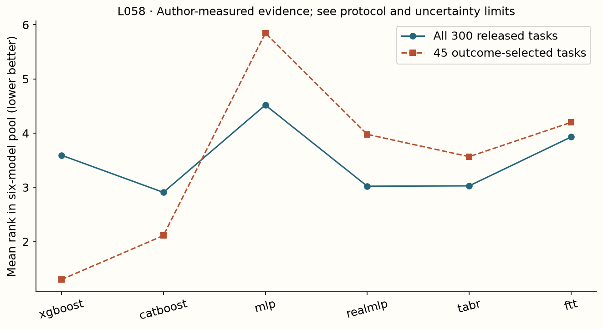

Year 2 · Quarter 2 · Lesson 058
Read a benchmark without inheriting its bias
Understand the computation. Challenge the evidence. Produce a defensible result.
Core reading: 35–50 minutes. Lab: 45–75 minutes plus declared experiment time. This sequence builds the strong single-table baseline and information discipline required to test the relational thesis.
Retrieve before reading
Without notes: Does choosing datasets by XGBoost advantage independently establish that advantage? Explain why, then recall a related failure mode from an older lesson.
A survey is a map; a benchmark is an experiment¶
Your task is to decide what evidence a model-family claim actually rests on. A survey organizes ideas and references. A benchmark specifies datasets, splits, preprocessing, model selection, metrics and aggregation, then measures a comparison. A meta-analysis combines results across tasks; its unit of evidence matters as much as the number of fits. Neither a long bibliography nor a large run count automatically establishes broad generalization. The relational thesis needs a baseline chosen from trustworthy evidence, so this distinction determines what you should reproduce next.
Read Borisov et al.'s survey for the landscape and TALENT, Sections 4–5 and 8 for an actual evaluation. The 2024 deep-tabular survey supplies another taxonomy. Add an independent distinction to your map: fitting a model per dataset versus using a model pretrained across tasks. These are organizing lenses, not interchangeable experimental evidence.
Read with two different questions in mind¶
A survey organizes a field: which problems methods address, which mechanisms they share and which assumptions separate them. A benchmark measures procedures under a concrete protocol. A survey can be an excellent conceptual map without independently rerunning every method it discusses. A large benchmark can measure many methods while leaving important conceptual distinctions unexplained.
When a paragraph says “recent methods improve tabular learning,” ask what role the sentence plays. Is it a taxonomy, a cited empirical claim, a synthesis across incomparable experiments or a new controlled comparison? These are different kinds of evidence. You should be able to annotate each important claim with its source and experimental denominator.
The TALENT table used here is a useful object because you can reconstruct part of the summary yourself. The parser turns a human-readable result table into a dataset-by-model matrix. That operation is not clerical: it fixes which tasks, model variants, metric directions and missing values enter your subsequent argument.
A model name alone is a poor taxonomy. Classify what happens to a row: numerical transformation, feature interaction, retrieval of labeled examples, aggregation of ensemble members or inference from a pretrained task learner. Then record what is learned on the current table and what was learned elsewhere. This prepares you to recognize that two differently named systems may share their central mechanism.
Build a question that the table can actually answer¶
“Which next baseline should I implement?” is a decision about your task constraints. The table can provide candidates and evidence about their behavior on its tasks. You still need to compare feature types, row counts, temporal structure, compute and target semantics with your intended application.
A useful output is a shortlist with a reason for each candidate: one strong tree procedure, one strong neural default, and a method whose mechanism targets a specific suspected weakness. The purpose of reading broadly is to design a sharper next experiment, not to accumulate model names.
Classify the operation, not the marketing name¶
An MLP composes learned affine maps and nonlinearities. A boosted tree ensemble adds partition-based corrections. Attention models compute input-dependent weighted combinations. Retrieval models condition predictions on selected stored examples. A prior-data fitted network learns across generated tasks and then conditions on a new labeled context. These categories overlap: TabM is an MLP ensemble, TabR combines a parametric encoder and retrieval, and TabICL uses attention for both representation construction and task conditioning.
Build a map with four independent columns: what learns across tasks, what changes at deployment, what information a prediction can access, and what determines inference cost. In a pretrained PFN, adding a labeled context can change predictions without changing weights. In a fitted MLP, learning a newly supplied target generally requires a parameter update. That is a concrete difference you can test; calling both models “deep” conceals it.
Reconstruct the denominator¶
The lab parses the authors' released binary, multiclass and regression tables. A cell such as 0.7645+0.0110 contains a reported mean and dispersion. It is not a list of seed measurements. Strip presentation emphasis, parse the mean, preserve absent results as missing, and record table direction: larger classification scores are better; smaller regression errors are better. Do not invent raw repeats from the published dispersion.
The pinned release contains 300 datasets. Its accompanying release note points to a newer corrected benchmark, mentioning duplicates and task-type corrections. This makes the frozen tables useful historical evidence, not an automatically current leaderboard. The notebook reports coverage for each task type and uses a declared six-model pool: XGBoost, CatBoost, MLP, RealMLP, TabR and FT-Transformer. Changing that pool can change ranks even when no model prediction changes.
Missing values are information about the experiment¶
Suppose a table contains five datasets and three models. Model C has results on only four datasets. Averaging each column over its available rows compares C on a different population from A and B. If the missing task is particularly hard for C, the apparent ranking can be optimistic.
There are several defensible policies: restrict to a complete common panel, report model-specific coverage alongside separate averages, or assign failures a prespecified treatment appropriate to the decision. None should be chosen after seeing which policy produces the preferred winner. The local parser preserves missingness so the aggregation layer can apply an explicit policy.
Never replace a dash with zero. For a loss metric, zero can mean perfect prediction; for an accuracy metric, it can mean complete failure. Either substitution invents a measurement. Likewise, the string “mean ± SD” contains two different statistics. Extracting the first numeric token may recover a mean, but it does not turn the reported SD into a standard error or reconstruct individual seeds.
Dataset identifiers need normalization without accidental merging. Two tasks with similar names may have different targets or preprocessing. Preserve the original row label and a stable canonical ID, and reject duplicate IDs rather than silently overwriting one row in a dictionary.
Before ranking, assert the matrix shape, metric direction and finite coverage. Manually compare a few parsed rows with the pinned source. A parser that runs without exception can still transpose model columns, misread a minus sign or remove a task. The artifact should make these mistakes detectable.
Turn incomparable units into comparable positions¶
For dataset d, rank its model scores after orienting them so smaller is better. Assign average ranks to ties. Then average each model's ranks across datasets. Rank 1 means best within that declared pool on that task; it says nothing about the size or practical value of the gain.
Consider lower-is-better errors for A/B/C: dataset one has .10/.11/.90; dataset two has 100/10/11. Averaging raw errors lets the second dataset's units dominate. Within-dataset ranks are [1,2,3] and [3,1,2], giving mean ranks [2,1.5,2.5]. B leads this rank summary. You still need the original errors to decide whether a difference matters. Keep separate classification and regression views alongside an overall rank summary, because task composition determines the latter.

Why ranks help, and what they erase¶
Consider two regression datasets. On the first, RMSEs for A and B are 10 and 11. On the second, they are 0.20 and 0.10. Averaging raw RMSE gives 5.10 for A and 5.55 for B, apparently favoring A, but the units and scales of the targets may be unrelated. A unit conversion on the first target can change that average without changing either model's useful ordering.
Within-dataset ranks give A positions 1 and 2, and B positions 2 and 1. Their mean ranks tie at 1.5. This avoids direct averaging of incompatible units, but it also discards the magnitude of each win. A tenfold improvement and a tiny improvement both count as first place.
Use ranks to summarize relative positions, then return to task-level scores to understand practical differences. If a summary changes substantially when one task is removed, inspect that task and the aggregation rule. The sensitivity may be a property of the small task population rather than an error.
Tied reported means require an honest tie policy. Rounded values can be equal even if their underlying unrounded values differ. The parsed table supports rankings at its published precision. It does not justify inventing extra decimal places from the accompanying standard deviations.
Outcome selection changes the question¶
Imagine retaining only datasets where A beats B. A's mean rank on this subset must look favorable by construction. This does not independently confirm that A is broadly strong; the selection rule already used the outcome being summarized. Selecting tasks by a deployment-relevant property fixed before model evaluation is a different operation.
The lesson's selected-subset view is a diagnostic of this mechanism. Keep the full-panel result beside it and label the selection rule. A dramatic ranking change is evidence that the denominator matters, not a reason to adopt the more flattering panel.
The average contains a choice about whose task matters¶
Giving each dataset equal weight estimates an average over tasks. Giving each row equal weight estimates an average dominated by larger datasets. These are different objectives. If one task has 100 rows and another has 100,000, row weighting makes the larger task contribute a thousand times more, even if the two deployments are equally important to you.
Task weighting can also hide relatedness. Ten targets derived from one source system may contribute ten votes while an unrelated domain contributes one. Equal weights do not automatically imply a representative task population. Describe the collection and consider whether a source-level grouping is needed for the question.
Suppose A wins nine small datasets by a little and loses one large dataset by a lot. Equal task ranks can favor A; row-weighted loss can favor B. Neither summary is mathematically wrong. The decision depends on whether you are choosing a default for many equally valued tasks or optimizing total error over a specific workload.
For your next experiment, write the weighting rule before measuring models. Then include a sensitivity view under one plausible alternative if it would change the recommendation. This makes the value judgment visible instead of hiding it inside the word “average.”
Make selection bias visible¶
Before viewing the result, predict what happens if we choose the 45 datasets where XGBoost has the largest rank advantage over the MLP. We have changed the evaluation population using the outcomes. The resulting rank table answers “how do these methods compare on the selected tasks?” It does not independently confirm that those tasks represent future deployment.
The lab performs this deliberately biased selection next to the full 300-dataset analysis. TALENT's compact benchmark construction is useful precisely when its selection objective is understood; reusing an outcome-selected subset to validate the same favored property requires care. For a new model, preregister an additional evaluation population or validate that the subset preserves conclusions outside the methods that selected it. TALENT Section 8.

Measured interpretation. The pinned tables contain 300 complete task rows for this six-model panel. catboost has the smallest full-panel mean rank (2.908); outcome-selecting 45 tasks changes both the question and the ranking. Rounded published means do not recover seed-level observations.
Inspect the numerical evidence table
| full_mean_rank | selected_45_rank | |
|---|---|---|
| xgboost | 3.593 | 1.300 |
| catboost | 2.908 | 2.111 |
| mlp | 4.518 | 5.844 |
| realmlp | 3.022 | 3.978 |
| tabr | 3.028 | 3.567 |
| ftt | 3.930 | 4.200 |
What uncertainty can you recover?¶
A paired dataset bootstrap samples dataset rows with replacement and recomputes mean ranks for every model on the same sampled rows. Its interval describes sensitivity to this empirical task collection under an exchangeable-dataset approximation. Related tasks, duplicate datasets, and shared source populations weaken that approximation. The procedure cannot reconstruct model-seed uncertainty from rounded published means, and it cannot resolve changes between benchmark versions.
Your evidence card must therefore include source revision, task coverage, score direction, model pool, selection regime, missingness handling, aggregation unit, and one excluded claim. “Six models on 300 historical tasks, complete-case rank reanalysis” is defensible. “We reproduced the paper's full leaderboard” is not the same claim.
Published mean and SD do not recover paired runs¶
Two models may each have mean loss 0.4 and SD 0.02 across seeds. That does not tell you the SD of their paired difference. If their errors move together across seeds, the difference can be stable; if they move in opposite directions, it can vary much more. The covariance is missing from the marginal summaries.
The variance identity is Var(A−B)=Var(A)+Var(B)−2Cov(A,B). Without the paired observations or an additional assumption, you cannot recover the covariance. Do not simulate arbitrary seed values from the reported means and SDs and then treat them as observed evidence.
A dataset bootstrap on the parsed mean-score matrix answers a different question. It resamples observed dataset rows jointly across model columns and measures how the aggregate changes with the task mix. It conditions on the reported means as the available observations. It does not restore training-seed uncertainty that the source table did not provide.
With a small or highly related task collection, bootstrap intervals can underrepresent uncertainty about genuinely new domains. State the resampling unit and the population you are willing to generalize to. A confidence interval is meaningful only together with the experiment and assumptions that generated it.
For the exit artifact, retain the pinned source identity, parser checks, complete-panel task IDs, selection rule and bootstrap seed. Then write one conclusion the reconstructed table supports and one it cannot support. This is the bridge from reading a survey to designing a defensible experiment.
Exit: choose the next experiment¶
Submit the coverage audit, full and outcome-selected rank tables, paired dataset intervals, and your family map. Write a four-sentence recommendation for lesson 60: which baselines to retain, which deployment regime to test, which evidence is stale or incomplete, and what result would change your choice. Do not choose a relational baseline solely because its single-table rival did poorly on a selected subset.
Run the companion lab
What you will do: Parse the released benchmark tables, bootstrap whole datasets, and compare full versus outcome-selected rankings.
parse_talent: Parse the pinned markdown mean+SD table into a dataset-indexed numeric frame. Preserve missing values; never turn them into zero.dataset_bootstrap: Resample whole dataset rows jointly across models and return the 2.5%/97.5% quantiles of mean scores.
Author-reference evidence: Frozen-result reanalysis of 300 TALENT tasks; not 300 fresh fits.
Submit: your completed notebook and student-l058-exit.json, plus your written interpretation. CHECK cells give immediate code feedback; paste the EXIT output here for a reasoning review.
Student notebook · Prepared lab · Open in Colab
2 substantive code tasks feed the live experiment, followed by behavioral CHECKs and a written EXIT artifact. The notebook contains the explanation and portable figures so it is teachable independently.
Ask me follow-up questions about any operation, CHECK or conclusion you cannot defend. Paste the EXIT artifact and your explanation for review. Revisit the retrieval question tomorrow and again in a week, before reopening the reference.